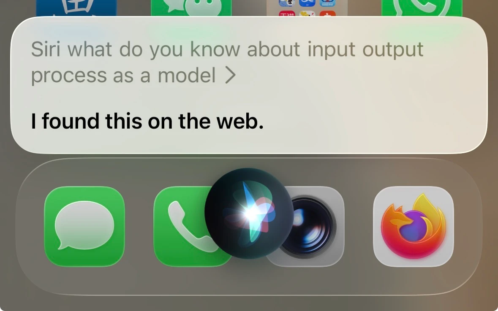

The IPO Loop
A 1985 NES and the phone in your pocket, different, but the same?
Read spotlight →Guiding questionHow are electronics present in everyday products?
You are surrounded by products that would be useless without a circuit inside them, and most of them were designed by people who are not electronics engineers. That is the situation this topic prepares you for. You do not need to be able to build the board. You do need to understand a system well enough to specify it, to argue with the person building it, and to notice when a design is asking for something impossible.
The input, process, output and feedback model is the most portable idea here. It applies to a kettle, a thermostat, a game controller and an entire factory, and it gives you a way to break an unfamiliar product into parts you can reason about. The rest of the topic fills in what can occupy each of those boxes. Take the responsible design objective in 3.4.2 seriously as well, because electronics are where the ethical content of this course stops being theoretical. E-waste, unrepairable devices and batteries glued into place are all decisions somebody made at a drawing board, and you will meet them again in C2.2 and C4.1.
Students must be able toDescribe an electronic system in terms of input, process, output and feedback.
Every electronic system can be described using the Input–Process–Output (IPO) model, often extended with a feedback loop:
Example (electric kettle): Temperature sensor (input) → microcontroller compares measured temperature to 100 °C target (process) → heating element on or off (output) → temperature reading returned to process (feedback).
A 1985 NES and the phone in your pocket, different, but the same?
Read spotlight →Students must be able toIdentify electronic products that are safe, energy-efficient and utilise minimal energy.
Electronics are embedded in almost every product we use: smartphones, medical devices, household appliances, vehicles, infrastructure. This ubiquity creates both opportunity and responsibility for designers.
Responsible electronic design considers:
Students must be able toDistinguish between analogue and digital systems.
Analogue systems use signals that vary continuously over a range of values. An analogue signal can take any value between a minimum and maximum, just like the physical world it represents. A microphone output, a temperature sensor voltage, and the position of a potentiometer are all analogue signals.
Digital systems represent and process information using only two discrete states: HIGH (logic 1, typically 3.3 V or 5 V) and LOW (logic 0, 0 V). All data (numbers, text, images, audio, video) is encoded as sequences of binary digits (bits). The binary system uses base 2 (only digits 0 and 1).
| Feature | Analogue | Digital |
|---|---|---|
| Signal type | Continuously variable | Two discrete states (0 or 1) |
| Noise sensitivity | High: noise degrades the signal | Low: noise rejected as long as threshold is not crossed |
| Processing | Op-amps, filters, oscillators | Logic gates, microcontrollers, processors |
| Example | Vinyl record, analogue thermometer, AM radio | CD audio, digital thermometer, Wi-Fi |
Most modern systems are mixed signal: an analogue front-end (sensor, amplifier) converts real-world signals, then an Analogue-to-Digital Converter (ADC) converts them to digital form for processing. Digital-to-Analogue Converters (DAC) convert digital results back to analogue for output (e.g., speakers, actuators).
A vinyl record stores sound as a continuously varying groove, an analogue waveform with no theoretical ceiling on resolution. A streamed track is sampled thousands of times a second and stored as discrete binary numbers, throwing away everything between samples. On paper, digital should be the more faithful copy: no surface noise, no wear, no needle skating across a physical groove degrading a little more with every play.
So why do so many people insist vinyl sounds "warmer" or "more real"? Is this a genuine property of analogue signals, a side effect of how vinyl masters are mixed differently from streaming masters, or closer to a placebo effect built on the ritual of the format? What would a fair, blind test to settle this actually need to control for?
Students must be able toDescribe analogue systems in terms of voltage, current, resistance, frequency and power using SI units: ampere (A), second (s), hertz (Hz), watt (W), volt (V), ohm (Ω). Use SI multipliers: p, n, μ, m, k, M, G, T.
Analogue signals are characterised by quantities that vary continuously. The most common waveform is the sine wave: it models the output of AC generators, audio signals, and many natural phenomena. Key analogue quantities and their SI units:
| Quantity | Symbol | SI Unit | Definition |
|---|---|---|---|
| Voltage (potential difference) | V | Volt (V) | Energy transferred per unit charge; drives current through a circuit |
| Current | I | Ampere (A) | Rate of flow of charge; 1 A = 1 coulomb per second |
| Resistance | R | Ohm (Ω) | Opposition to current flow; Ohm's Law: V = IR |
| Frequency | f | Hertz (Hz) | Number of complete cycles per second; 1 Hz = 1 cycle/s |
| Power | P | Watt (W) | Rate of energy transfer; P = IV = V²/R = I²R |
| Time | t | Second (s) | Period T = 1/f (time for one complete cycle) |
SI multipliers: Engineers routinely use prefixes to avoid writing many zeros.
| Prefix | Symbol | Factor | Example |
|---|---|---|---|
| pico | p | 10⁻¹² | 100 pF capacitor (picofarads) |
| nano | n | 10⁻⁹ | 10 nF capacitor (nanofarads) |
| micro | μ | 10⁻⁶ | 47 μF capacitor (microfarads) |
| milli | m | 10⁻³ | 20 mA LED current (milliamps) |
| kilo | k | 10³ | 10 kΩ resistor (kilohms) |
| Mega | M | 10⁶ | 1 MHz clock frequency (megahertz) |
| Giga | G | 10⁹ | 2.4 GHz Wi-Fi (gigahertz) |
| Tera | T | 10¹² | 1 TB storage (terabytes) |
AC mains electricity in Australia is 230 V RMS at 50 Hz. A sine wave at 50 Hz completes one full cycle every 20 ms (period T = 1/50 = 0.02 s).
Students must be able toDescribe digital systems in terms of using discrete values such as binary digits and on and off signals. Define logic gates.
Digital systems store, process, and transmit all information as binary (base-2) numbers: sequences of 0s and 1s. Each binary digit is a bit; 8 bits = 1 byte. Advantages of digital over analogue: noise immunity, perfect copying, easy storage, encryption, and compression.
Logic gates are the fundamental building blocks of digital circuits. They take one or more binary inputs and produce a single binary output according to a defined Boolean function:
| Gate | Symbol label | Function | Output rule |
|---|---|---|---|
| AND | & | Output HIGH only when ALL inputs are HIGH | A AND B → 1 only if A=1 and B=1 |
| OR | ≥1 | Output HIGH when ANY input is HIGH | A OR B → 1 if A=1 or B=1 (or both) |
| NOT | 1 | Inverts the single input | NOT A → 1 if A=0; 0 if A=1 |
| NAND | & with bubble | NOT AND: inverse of AND | Output LOW only when ALL inputs HIGH |
| NOR | ≥1 with bubble | NOT OR: inverse of OR | Output HIGH only when ALL inputs LOW |
| XOR | =1 | Exclusive OR: output HIGH when inputs differ | A XOR B → 1 only if A ≠ B |
Logic gates combine to form adders, comparators, flip-flops (memory cells), counters, and all the complex functions of a microprocessor. NAND and NOR are universal gates: any logic function can be built using only one type.
Students must be able toExplain the purpose of passive electronic components, including fixed and variable resistors, capacitors, switches, relays; and active components such as diodes and transistors.
Passive components do not require an external power supply to function and cannot amplify signals; they can only attenuate, store, or redirect energy:
Active components require an external energy source and can amplify or switch signals:

Plan the switches, wiring and components for a real macropad, then generate downloadable code to build it with an ESP32.
Students must be able toIdentify appropriate input devices for a given electronic system, including light, sound, temperature, motion, and touch sensors.
Input devices (sensors and transducers) convert a physical change in the environment into an electrical signal. Choosing the right sensor is a key design decision. Common sensor types:
| Sensor | Detects | Type | Application |
|---|---|---|---|
| LDR (Light Dependent Resistor) | Light intensity | Analogue: resistance decreases with light | Automatic street lights, camera exposure |
| Thermistor (NTC) | Temperature | Analogue: resistance decreases as temp rises | Thermostats, fire alarms, engine management |
| Microphone | Sound (pressure waves) | Analogue: converts acoustic to electrical signal | Voice assistants, recording, alarms |
| PIR (Passive Infrared) | Body heat / motion | Digital: detects IR changes from moving warm objects | Security lights, intruder alarms |
| Ultrasonic sensor | Distance | Digital/analogue: measures echo time | Parking sensors, robotics, level sensing |
| Push switch | Touch / physical press | Digital: open or closed | Keyboards, machine safety interlocks |
| Potentiometer | Position / rotation | Analogue: voltage divider | Joysticks, rotary encoders, throttle control |
When selecting a sensor, designers consider: measurand (what physical property is detected), range, sensitivity, response time, linearity, power requirements, size, and cost.
Students must be able toDescribe the role of processing devices in an electronic system, including logic ICs, microcontrollers, and single-board computers.
The process stage in an electronic system receives input signals, applies logic or computation, and generates output signals. Processing devices range in complexity:
For most embedded product designs, a microcontroller is the most common choice: it is purpose-built, inexpensive, energy-efficient, and available in a huge range of sizes and capabilities.
Students must be able toDescribe the function of control circuits in everyday products, and explain how they monitor and respond to changing conditions.
A control circuit continuously monitors one or more inputs, applies logic, and switches outputs on or off to maintain a desired condition. Control circuits underpin all automated systems.
Examples of control circuits in everyday products:
Control circuits may be implemented as hardwired analogue circuits (comparators with hysteresis) or as software running on a microcontroller. Software-based control is more flexible: parameters can be changed by reprogramming rather than replacing components.
Students must be able toIdentify appropriate output devices for a given electronic system, including lights, displays, motors, speakers, and solenoids.
Output devices convert an electrical signal into a physical effect: light, sound, motion, or heat. The output device chosen must match the application's requirements for power, speed, precision, and size.
| Output Device | Physical Effect | Application |
|---|---|---|
| LED / LED array | Light (visual indication) | Status indicators, backlights, traffic lights, displays |
| LCD / OLED display | Text and graphics | Instrument panels, smartwatches, control interfaces |
| DC motor | Continuous rotation | Electric vehicles, fans, conveyor belts, toys |
| Servo motor | Precise angular position | Robot joints, RC vehicles, camera gimbals |
| Stepper motor | Stepped rotation (precise increments) | 3D printers, CNC machines, disk drives |
| Loudspeaker / buzzer | Sound (audio output) | Alarms, audio playback, voice output |
| Solenoid | Linear push or pull motion | Door locks, valves, printers, pinball machines |
| Heating element | Heat | Kettles, ovens, 3D printer hot-ends |
Power management is critical at the output stage: most microcontrollers can only supply ~40 mA per GPIO pin. A transistor or MOSFET driver, or a relay, is needed to switch higher-current outputs such as motors and solenoids.
Students must be able toExplain the role of negative and positive feedback in electronic systems, and identify how feedback creates self-regulating systems.
Feedback is the process of routing part of the output signal back to the input, where it influences the system's behaviour. Feedback is fundamental to creating stable, accurate, self-correcting systems.
Negative feedback. The feedback signal opposes the change in output, reducing the difference between the desired (set point) and actual output. Negative feedback makes systems stable and predictable.
Positive feedback. The feedback signal reinforces the change, amplifying the output further in the same direction. Positive feedback leads to instability or latching behaviour, often used deliberately in oscillators and Schmitt triggers.
Students must be able toDescribe the characteristics of an ideal op-amp and explain the operation of inverting and non-inverting amplifier configurations.
An operational amplifier (op-amp) is a high-gain, DC-coupled voltage amplifier with two inputs, a non-inverting input (+) and an inverting input (−), and a single output. Op-amps are integrated circuits (the μA741 is the classic example; the LM358 and TL071 are widely used modern variants).
Ideal op-amp characteristics: infinite open-loop gain, infinite input impedance (draws no current), zero output impedance, zero offset voltage, infinite bandwidth. Real op-amps approach these ideals.
Common configurations:
Students must be able toDescribe what an embedded system is and explain how embedded systems communicate with each other using standard protocols.
An embedded system is a dedicated computer system designed to perform a specific function within a larger product or system. Unlike a general-purpose computer, an embedded system runs a fixed program and is not intended to be reprogrammed by the end user.
Key characteristics: dedicated function, real-time response, constrained resources (limited RAM and flash memory), low power consumption, high reliability, long service life.
Examples: Engine control unit (ECU) in a car, anti-lock brake system, insulin pump controller, smart thermostat, industrial PLC (Programmable Logic Controller), washing machine control board.
Communication between embedded systems. Multiple embedded systems within a product or across products use standard serial communication protocols:
An interactive and (I promise) interesting look into the parts that make up personal computers, and how we got to where we are with them.
Students must be able toDraw and interpret simple electronic circuit diagrams using standard IEC symbols, and distinguish between series and parallel circuits.
A circuit diagram (schematic) is a standardised graphical representation of an electronic circuit, using universally recognised symbols defined by IEC 60617. Circuit diagrams allow engineers worldwide to communicate circuit designs unambiguously.
Key IEC schematic symbols (know these for examination):
Series circuits: Components connected end-to-end in a single path. Same current flows through all components. Total resistance = R₁ + R₂ + R₃. If one component fails (open), the entire circuit stops working. Example: Old-style Christmas lights in series: one blown bulb stops all.
Parallel circuits: Components connected across the same two nodes, providing multiple current paths. Same voltage across all branches. Total resistance is less than any individual resistor (1/R_total = 1/R₁ + 1/R₂ + ...). If one branch fails (open), others continue. Example: Household mains wiring: all appliances share the same 230 V, and switching one off does not affect others.
Ten questions sampling across the fourteen learning objectives for this topic. Select one answer per question, then click "Check all answers" to see your score and the explanations.
A public washroom hand dryer starts when hands are placed beneath it and stops shortly after they are withdrawn. An infrared emitter sends a pulsed beam downward; a photodiode alongside it detects light reflected back from whatever is in the way.
Table 1: Elements of the hand dryer system
| Element | Component | Function |
|---|---|---|
| Input | Infrared emitter and photodiode | Detects a reflecting surface within 150 mm |
| Process | Microcontroller | Compares reflected signal with a threshold |
| Output | Motor and heating element | Drives air over a heater |
| Feedback | Continued reflection | Holds the motor on while hands remain |
| — | Thermal cut-out on heater | Opens above 90 °C |
(a) State the model represented by the four elements in Table 1. [1]
(b) Outline why the infrared beam is pulsed rather than continuous, see Table 1. [2]
(c) Explain the role of feedback in preventing the dryer from stopping while hands are still beneath it, see Table 1. [3]
(a) The input-process-output-feedback model.
(b) A washroom is full of infrared from sunlight and lighting, and a photodiode cannot distinguish that background from the emitter's own beam if the beam is steady. Pulsing it at a known rate lets the microcontroller accept only signals arriving at that rate, so ambient infrared is rejected and the dryer does not start on its own.
(c) Without feedback the system would be open loop: it would detect hands once, run for a fixed time and stop, whether or not the hands were still there. Feedback closes the loop by returning information about the current state of the output's environment to the input, so the microcontroller is not deciding once but re-testing continuously. Because the reflected signal is still above threshold, the condition that started the motor remains true and the motor stays on, and the dryer therefore matches its running time to the user rather than to a timer. The same mechanism handles the opposite case, since the signal falls away when the hands are withdrawn and the dryer stops without the user doing anything. The short delay before stopping exists because feedback that acted instantly would cut out every time the hands moved momentarily out of the beam, which is why the system waits for the signal to stay absent rather than reacting to a single missing sample.
(a) • Input-process-output-feedback (IPOF) ✓
Award [1] for the correct model up to [1 max].
(b) Electronic systems utilise input devices to identify a change in an environment that requires a response.
• A washroom contains infrared from sunlight and lighting ✓
• A photodiode cannot distinguish background infrared from a steady beam ✓
• Pulsing at a known rate lets the controller accept only signals at that rate ✓
• Ambient infrared is rejected, so the dryer does not start on its own ✓
• Pulsing allows a higher peak power without a high average power ✓
• Lower average current extends component life and reduces heating ✓
• The emitter is off most of the time, saving energy ✓
Award [1] for each relevant brief point on why the beam is pulsed up to [2 max]. Credit either the noise rejection or the power argument.
(c) Electronic systems comprise an input, process, output and feedback loop.
• Without feedback the system would be open loop ✓
• It would detect hands once, run for a fixed time and stop regardless ✓
• Feedback returns information about the current state to the input ✓
• The microcontroller re-tests continuously rather than deciding once ✓
• The reflected signal remains above threshold while hands are present ✓
• The starting condition stays true, so the motor stays on ✓
• Running time is matched to the user rather than to a timer ✓
• The same loop stops the dryer when the signal falls away ✓
• The user does not have to switch it off, which suits a shared washroom ✓
• The delay before stopping prevents cut-out when hands move briefly out of the beam ✓
• The system waits for a sustained absence rather than a single missing sample ✓
Award [1] for each relevant reason / cause explaining the role of feedback up to [3 max]. Award a maximum of [2] where the response does not contrast the feedback loop with an open loop system.
A guitar amplifier takes a small signal from a pickup and drives a loudspeaker. Two amplifiers are compared: a valve amplifier, in which the whole signal path is analogue, and a modelling amplifier, which converts the signal to digital, processes it, and converts it back.
Table 2: The two amplifiers compared
| Valve, analogue | Modelling, digital | |
|---|---|---|
| Signal representation | Continuously variable voltage | Sampled 48 000 times per second |
| Behaviour when overdriven | Gradual, progressive distortion | Abrupt clipping unless modelled |
| Noise added per stage | Accumulates | None after conversion |
| Copies of a stored sound | — | Identical |
| Mass | 22 kg | 7 kg |
| Sounds available | 1 | 60 stored presets |
(a) State the process by which a continuously variable voltage is represented digitally, see Table 2. [1]
(b) Describe why noise accumulates in the analogue amplifier but not after conversion in the digital one, see Table 2. [2]
(c) Evaluate the modelling amplifier as a replacement for the valve amplifier, see Table 2. [3]
(a) Analogue-to-digital conversion, by sampling and quantisation.
(b) An analogue stage cannot tell signal from noise, because both are just voltage, so any noise picked up is amplified along with the music and each further stage adds its own on top of what it received. A digital sample is a number, and a small voltage disturbance leaves that number unchanged as long as it is not large enough to alter which value was read, so noise is discarded at every stage rather than carried forward.
(c) As a piece of equipment the modelling amplifier is clearly better. It offers sixty sounds against one, weighs a third as much, which matters to someone carrying it to a venue, and it stores and recalls a setting exactly, so a sound found once can be reproduced identically at every performance and copied to another amplifier. Against that, it depends on modelling the very behaviour that makes the valve amplifier musical. A valve overdriven produces gradual, progressive distortion, and players use that as an instrument, varying their playing to move the amplifier through it. Digital clipping is abrupt and unmusical unless the response is deliberately modelled, so the digital amplifier is trying to imitate something the analogue one does by its nature, and it succeeds only as far as the model is good. The judgment depends on what is being bought: for a player who needs many sounds reliably, the modelling amplifier is the better product, while for a player whose sound is one overdriven valve circuit, it remains a reproduction of the thing rather than the thing.
(a) • Analogue-to-digital conversion ✓
• Sampling and quantisation ✓
Award [1] for the correct process up to [1 max].
(b) An analogue system uses continually changing signals; a digital system stores, processes and communicates information in digital form.
• An analogue stage cannot distinguish signal from noise, since both are voltage ✓
• Noise is amplified along with the music ✓
• Each stage adds its own noise on top of what it received ✓
• Degradation is therefore cumulative through the signal path ✓
• A digital sample is a number rather than a voltage level ✓
• A small disturbance leaves the number unchanged unless it alters the value read ✓
• Noise is discarded at each stage rather than carried forward ✓
• This is why copies of a stored digital sound are identical ✓
Award [1] for each detail, leading to an account of why noise accumulates in one and not the other, up to [2 max]. The response must contrast the two representations.
(c) Electronic systems can be either analogue or digital, and each suits different applications.
Strengths:
• Sixty stored presets against a single sound ✓
• 7 kg against 22 kg, which matters to a player carrying it to a venue ✓
• A setting is stored and recalled exactly, so a sound is reproducible at every performance ✓
• Settings can be copied identically to another amplifier ✓
• No noise added after conversion, so the signal path stays clean ✓
• No valves to wear out or replace ✓
Limitations:
• It depends on modelling the behaviour that makes the valve amplifier musical ✓
• Valve overdrive is gradual and progressive, and players use it as part of the instrument ✓
• Digital clipping is abrupt and unmusical unless deliberately modelled ✓
• The digital amplifier imitates what the analogue one does by its nature ✓
• It succeeds only as far as the model is accurate ✓
• Sampling at 48 000 per second imposes a limit the analogue path does not have ✓
Judgment:
• Better for a player who needs many sounds recalled reliably ✓
• For a player whose sound is one overdriven valve circuit it remains a reproduction ✓
Award [1] for each distinct strength / limitation, leading to an appraisal of the modelling amplifier as a replacement, up to [3 max]. Award a maximum of [2] where only strengths or only limitations are given.
A commercial greenhouse grows tomatoes under a climate controller. Vents in the roof open and close, a heating pipe warms the air, and a screen draws across to shade the crop. The grower sets a target temperature and humidity band.
(a) Identify two input devices the controller would need. [2]
Table 3: Controller inputs and outputs
| Stage | Device | Signal |
|---|---|---|
| Input | Thermistor | Analogue, resistance falls as temperature rises |
| Input | Capacitive humidity sensor | Analogue |
| Input | Rain detector | Digital, on or off |
| Process | Microcontroller | — |
| Output | Vent motor | Mains, 400 W |
| Output | Heating valve | Mains, 60 W |
(b) Outline why the analogue sensor signals must be converted before the microcontroller can use them, see Table 3. [2]
The microcontroller operates at 3.3 V and can supply a few milliamps per pin. The vent motor draws 400 W from the mains.
(c) Describe why a relay is required between the microcontroller and the vent motor, see Table 3. [2]
The controller must close the vents when it rains, open them when the greenhouse is too hot, and heat when it is too cold. On a warm day with heavy rain, two of these conditions conflict.
(d) Explain how the control logic should resolve the conflict between the rain and temperature inputs, see Table 3. [4]
(a) A temperature sensor such as a thermistor, and a humidity sensor.
(b) A thermistor produces a continuously variable resistance, and the microcontroller works only with discrete numbers, so the analogue voltage has to be sampled and quantised by an analogue-to-digital converter before it can be compared with a target. Without conversion there is nothing for the controller to compare, since it cannot operate on a voltage level directly.
(c) The microcontroller supplies a few milliamps at 3.3 V and the motor needs 400 W from the mains, so the output pin cannot drive the load by many orders of magnitude and would be destroyed if connected directly. The relay lets a small current from the pin close a separate switch carrying the mains, and because the two circuits are only linked by a magnetic field it also isolates the low-voltage electronics from mains voltage, protecting both the controller and anyone working on it.
(d) The conflict is that the temperature input calls for the vents to open and the rain input calls for them to close, so the logic has to decide which condition takes precedence rather than acting on each independently.
Rain should win, and the reason is the asymmetry of the consequences. An overheated greenhouse costs yield over hours and is recoverable, whereas rain falling directly onto the crop and the electrical equipment causes damage that is immediate and permanent. When two demands conflict, the control should default to the state that fails safely, which here means closed.
Implementing that means the rain input has to override rather than merely contribute. If the controller simply weighed the two, a hot enough day would open the vents in a downpour, so the rain condition has to be evaluated first and the temperature branch reached only when it is false. That is straightforward because the rain detector is digital, giving a clean on or off with no threshold to interpret, unlike the thermistor.
The logic then needs to handle the greenhouse still being too hot with the vents shut. Venting is not the only cooling output available: the shade screen can be drawn to cut incoming solar gain, and the heating valve must be held closed. So the correct response is not to do nothing but to fall back to the cooling actions that do not require an open roof.
Two practical points follow. The rain detector should have a delay before the vents reopen, because a detector drying out in intermittent rain would cycle a 400 W motor repeatedly and wear it out. And because the whole crop depends on one digital input, the failure of that sensor should default to the safe state, so a disconnected rain detector should be treated as rain rather than as dry.
(a) Electronic systems utilise input devices to identify a change in an environment that requires a response.
• Thermistor / temperature sensor ✓
• Humidity sensor ✓
• Rain detector ✓
• Light sensor / LDR ✓
• Wind speed or direction sensor ✓
• CO₂ sensor ✓
• Vent position sensor ✓
Award [1] for each relevant input device up to [2 max]. Do not credit motors or valves, which are outputs.
(b) An analogue system uses continually changing signals; a digital system stores, processes and communicates information in digital form.
• A thermistor produces a continuously variable resistance ✓
• The microcontroller operates only on discrete numbers ✓
• The analogue voltage must be sampled and quantised ✓
• An analogue-to-digital converter performs this conversion ✓
• Without conversion there is no value to compare with the target ✓
• The controller cannot operate on a voltage level directly ✓
• A digital value can be stored, compared and logged ✓
Award [1] for each relevant brief point on why conversion is required up to [2 max].
(c) Electronic systems utilise output devices to perform a function in response to an initial stimulus, and interface components match the controller to the load.
• The pin supplies a few milliamps at 3.3 V ✓
• The motor requires 400 W from the mains ✓
• The output pin cannot supply the load by many orders of magnitude ✓
• A direct connection would destroy the microcontroller ✓
• A small pin current closes a separate switch carrying the mains ✓
• The two circuits are linked only by a magnetic field, giving isolation ✓
• Isolation protects the electronics and anyone working on the low-voltage side ✓
• It also protects against back-EMF from the motor ✓
Award [1] for each detail, leading to an account of why a relay is required, up to [2 max]. Credit both the current handling and the isolation arguments.
(d) Many everyday electronic devices contain control circuits to monitor and control, and digital systems use logic to compare input data.
The nature of the conflict:
• Temperature calls for the vents to open; rain calls for them to close ✓
• The logic must set a precedence rather than act on each input independently ✓
Why rain takes priority:
• The consequences are asymmetric ✓
• Overheating costs yield over hours and is recoverable ✓
• Rain on the crop and on electrical equipment causes immediate, permanent damage ✓
• Control should default to the state that fails safely, which is closed ✓
Implementation:
• The rain input must override rather than contribute to a weighted decision ✓
• A weighted decision would open the vents in a downpour on a hot enough day ✓
• The rain condition is evaluated first and the temperature branch reached only if false ✓
• The rain detector is digital, giving a clean on or off with no threshold to interpret ✓
Fallback actions:
• Venting is not the only cooling output available ✓
• The shade screen can be drawn to cut incoming solar gain ✓
• The heating valve must be held closed ✓
• The correct response is to fall back to cooling actions that do not need an open roof ✓
Practical refinements:
• A delay before reopening prevents a drying detector cycling a 400 W motor repeatedly ✓
• Repeated cycling would wear out the vent motor ✓
• A failed or disconnected rain detector should default to the safe state, treated as rain ✓
• The whole crop depends on one digital input, so its failure mode matters ✓
Award [1] for each relevant detail / reason / cause relating to how the control logic should resolve the conflict up to [4 max]. Award a maximum of [3] where the response asserts a priority without justifying it from the consequences. Credit responses that identify fallback outputs or a fail-safe default.
Linking Questions

Hold the side button of an iPhone and say "set a timer for five minutes." You have just run the four stages in this topic without thinking about any of them. The input is the microphone, turning the pressure waves of your voice into a voltage that changes over time. The process stage is more interesting than it looks, because where it happens depends on what you asked for. A timer is handled by the chip in your hand, which is why it still works in a lift without any reception. A question like "what's the weather tomorrow" has to travel to Apple's servers and back before anything can happen. The output is the audio feedback and the timer counting down on screen, as well as the obnoxious alarm sound in 5 minutes. The feedback is the phone staying alert for what you say next, so that "wait, cancel that alarm" is processed without requiring you to start over.
Now go back to 1985. A Nintendo Entertainment System has no microphone, no network and a processor running at a blazing fast 1.79 MHz. Despite the differences, it runs the same loop. Pressing a button on the controller closes a circuit, and the console reads that closed circuit as a digital HIGH. That is your input. The process is the 8-bit CPU checking every button about sixty times each second and updating what it holds in memory: where Mario is, what he's standing on, or perhaps whether he has bumped into something deadly. For output, the picture processing unit turns that memory into a video signal the television can display. The feedback is you: you see poor Mario die, and your thumb has already decided what to press next.
Four decades and an exponential gap in hardware separate a phone that understands speech from a console that understands eight buttons. The four boxes function the same though, illustrating why the model is worth learning.